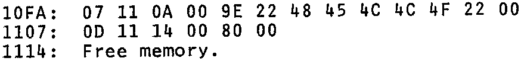
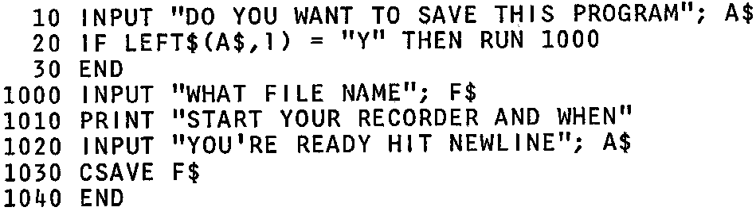

INMC News |
April/May 1980 · Issue 7 |
| Page 7 of 39 |
|---|
maps to the following
Where 9E is equivalent to PRINT and 80 to END.
Having established this it is simple, but tedious to dissect BASIC programs and find the single byte representation of the reserved words. A much better way is to use the computer to give a list of byte values and corresponding words. This is readily done by writing a short assembler program whose output goes to the BASIC text storage area and, in effect, writes a BASIC program. This way you can work out the magic reseved words and their decimal equivalents.
What is the point of all this? Well, the BASIC allows BASIC programs to use machine code sub-routines – all very well. But for machine code freaks, how about a machine code programs calling BASIC subroutines? Or, how about writing a BASIC program which writes a BASIC program and then executes it? (I’m not sure if that’s recursion or incest.)
2) The BASIC documentation differentiates between commands and statements, but in fact you can use commands in statements. For example try this program:
I hope that these ideas will be of some use to somebody and look forward to seeing some interesting programs using them. Keep up the good work.
H.E. Gilhespie.
Bexley Heath, Kent.
As the BASIC manual details, the single byte representations of reserved words can also be used when writing programs. e.g. using ? instead of PRINT. There is a list in the BASIC manual of equivalents, but in the INMC’s “Basic Programs Book 1” there is a more detailed list.
An optimist is a programmer who writes in ink.
| Page 7 of 39 |
|---|